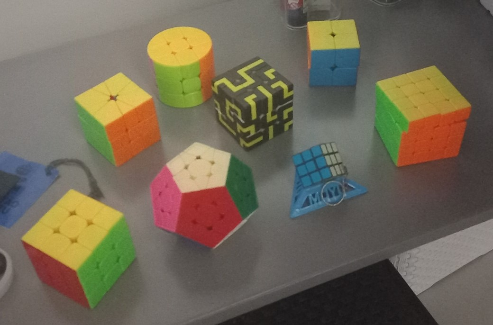

Sobre Mim
Sou Pedro Vítor de Oliveira Monte, tenho 18 anos e nasci em Recife, Pernambuco. Atualmente estou no primeiro período de Ciência da Computação, na UFPE. Moro com minha mãe e minha irmã. Morei em Recife a maior parte da minha vida, em 2004 e a partir de 2009, quando voltei do Rio de Janeiro, que morei lá por 4 anos.
Hobbies
Séries
Gosto muito de ver séries, principalmente as animações, como Avatar e o Príncipe Dragão. Minhas séries preferidas são Gravity Falls e Sherlock, e a última que terminei foi Breaking Bad, que também é uma das minhas favoritas. Atualmente tô assistindo Sandman e Better Call Saul.
Filmes
De filmes, vejo poucos ultimamente, mas meus preferidos são as animações também. Meu filme favorito é Os Incríveis, mas amo vários outros da Pixar, como Monstros SA, Soul e Toy Story 3. Curto muito também os filmes do Studio Ghibli, principalmente Vidas ao Vento e Sussurros do Coração. Gosto também dos gêneros de ficção, suspense, super heróis e até umas comédias românticas. Meus preferidos são Homem Aranha no Aranha Verso, Parasita, Questão de Tempo e Senhor dos Anéis.
Músicas
Ouço de tudo. Principalmente rock, R&B e folk. É até difícil escolher algumas pra colocar aqui, porque eu falaria mil artistas diferentes kkkkkk. Mas amo bandas como Nothing But Thieves, The Strokes, Of Monsters and Men. De artistas eu gosto muito de Michael Kiwanuka, The Weeknd, Frank Ocean, Giveon, Hozier, Willow. De música brasileira eu curto MPB e indie rock, mas não ouço tanto. Gosto de Milton Nascimento, O Terno e Terno Rei. Também curto outros estilos, como pop, indie, soul, música coreana, folk, anos 80...
Jogos
Não sou muito de jogar, mas tenho alguns que eu adoro. Primeiro Minecraft, que joguei a maior parte da minha vida (desde 2011). Esse jogo me fez conhecer e me aproximar dos meus melhores amigos da vida, porque eles também jogavam. Também gosto de alguns jogos indie, como Portal 2 e Life Is Strange, são meus favoritos.
Cubo Mágico
Esse é um hobby antigo que eu tenho mas que pratico pouco. Começou em 2014 quando eu ganhei um cubo mágico de chaveiro, e fiquei quebrando a cabeça pra resolver. Decidi aprender e virou um hobby meu, tentando montar cada vez mais rápido. Hoje em dia tenho diversos cubos de diversos formatos e monto vários deles.
Academia
Comecei academia em 2022 e virou um hobby meu. Gosto de treinar e me desafiar sempre, e também a sensação boa que dá depois de um bom treino. Sou bem curioso então também curto aprender sobre musculação.
Curso e Trajetória Acadêmica
Por que escolhi CC?
Sempre gostei de matemática, desde pequeno. E desde sempre tive afinidade com tecnologias, então desde meu 8º ano eu decidi que ia fazer engenharia, (mais especificamente engenharia da computação). Mas no 3º ano resolvi escolher CC, por ser mais voltado a programação e menos em física (que eu gosto, mas achei que seria uma dificuldade na faculdade). Também gosto muito de quebrar a cabeça pra resolver problemas de lógica, então por isso fui pra essa área.
Histórico Acadêmico
Estudei meu Ensino Médio no Colégio Núcleo, de 2019 a 2021. Fiz diversas olimpíadas, entre elas a ONHB (Olimpíada Nacional em História do Brasil), que realizei nos 3 anos e até fui pra fase final, em Campinas, em 2019. Além delas, também fiz OBA, OBMEP, OBF, OPEQ, OCM, entre outras.